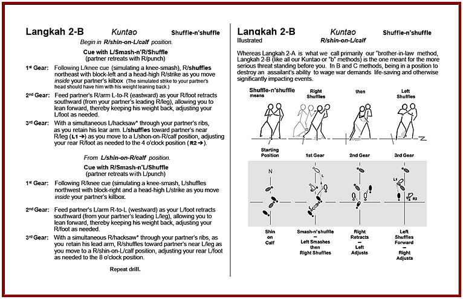

|
|
|  |

|
Of the approximately 93 pages in the book's manuscript, each of the 18 Langkah drills is covered with a
single page write-up, along with sticks-n'feet illustration pages. In addition, there are 10 stick-figure
pages showing potential applications of the drills. Because this is published as an
eBook those same applications are also shared in some 12 minutes of video.
(A downloadable .pdf version
is also available, but it comes without the video clips.)
Beyond the technical pages, there are illustrated write-ups providing definitions of terms like killbox and others, safety instructions on how to more effectively strike your opponent's legs while protecting your own knees, as well as several other tools like Langkah Matrix and Methods chart, Langkah Drill Summary with its 1st and 3rd Gear Foot Movements Table, a Quick Memory Table covering langkah drill cues (i.e. smash-n'step, smash-n'shuffle, etc.), and a description sharing the Best Way to Teach & Study These Drills. Putting together this book actually taught us more about these legwork drills than we could imagine.
Our hope is that the information shared herein is also very helpful to you.
|
|
©Copyright Bob Orlando, 2004-2016 All rights reserved. |
http://www.OrlandoKuntao.com
E-mail: Ron@OrlandoKuntao.com |
Last update:
Aug. 6, 2016 by Bob Orlando |